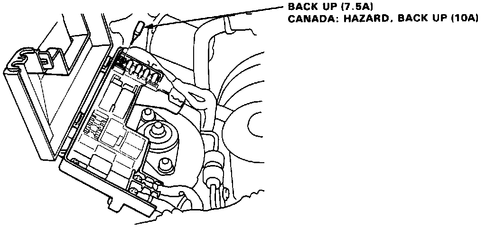

Without Scan Tool

ECU RESET PROCEDURE
1. Turn the ignition switch off.
2. Remove the BACK UP fuse (7.5 A) from the under-hood fuse/relay box for 10 seconds to rest ECU.
CANADA: Remove the HAZARD, BACK UP fuse (10A) from the under-hood fuse box for 10 seconds to reset ECU.
FINAL PROCEDURE (This procedure must be done after any troubleshooting)
1. Remove the jumper wire.
NOTE: If the Service Check Connector is jumped, the Check Engine Light will stay on.
2. Do the ECU Reset Procedure.